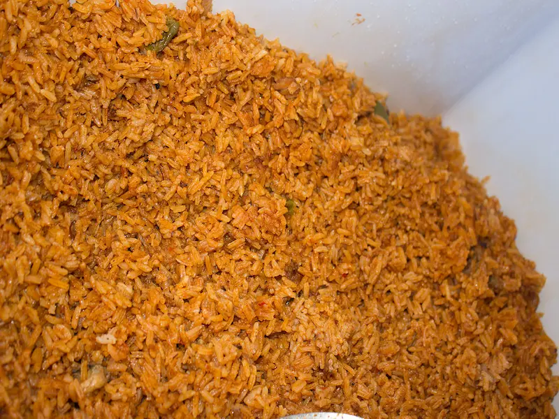

Discover the Beauty of Nigeria
Explore breathtaking landscapes, vibrant cultures, delicious cuisines, and unforgettable adventures across Nigeria.
Explore DestinationsWelcome
Nigeria is Africa's most populous country and one of its most diverse nations. From spectacular waterfalls and wildlife parks to rich cultural festivals and historic landmarks, there is always something exciting to discover.
Featured Destinations
Nigerian Culture
Nigeria is home to more than 250 ethnic groups, each with unique languages, customs, music, dances, clothing, and traditions. Festivals such as the Durbar Festival and the Osun-Osogbo Festival showcase the country's rich cultural heritage.
Famous Nigerian Cuisine

Jollof Rice
Jollof Rice is one of Nigeria's most celebrated dishes. It is commonly served during weddings, parties, birthdays, and family celebrations.
Travel Tips
- Carry lightweight clothing suitable for tropical weather.
- Respect local customs and traditions when visiting communities.
- Hire local guides when exploring historical sites.
- Keep your camera ready because Nigeria has many beautiful landscapes.